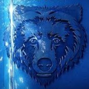
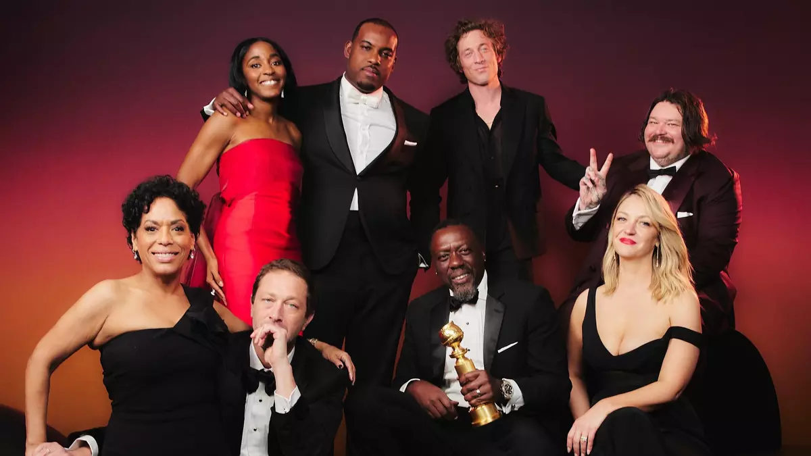

The Bear (El Oso) es una serie de comedia dramática de FX/Hulu ambientada en Chicago.
El protagonista es Berzatto, un joven y talentoso chef de alta cocina que regresa para gestionar el caótico
restaurante de sándwiches de su familia tras el suicidio de su hermano,
buscando transformarlo mientras lidia con el duelo y el estrés culinario

Trama: Carmy intenta transformar el local de sándwiches en un restaurante de prestigio, lidiando con el duelo, deudas y un personal difícil.
Estilo: Destaca por su realismo, planos intensos, manejo de la ansiedad y uso de palabrotas.
Premios: Ha sido galardonada con múltiples premios Emmy.
Realismo:
No se utilizan dobles de manos y la trama se inspira en el ambiente real de la restauración.
